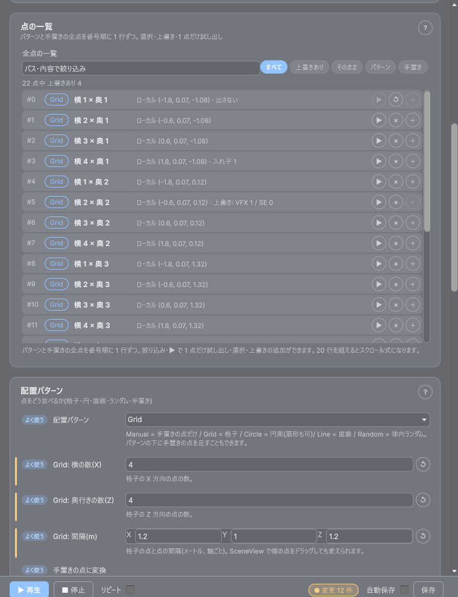
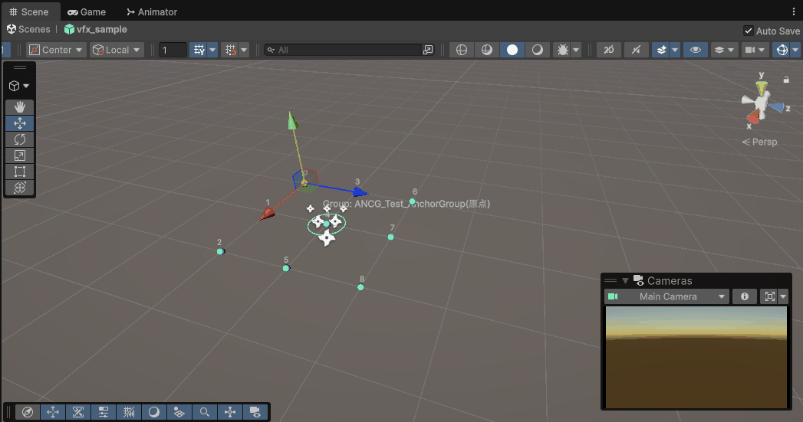

配置セット（複数の場所にまとめて出す）
最終更新日: 2026-10-13
配置セット（Anchor Group）は、「この形に並べた場所に、このエフェクト / 効果音を出す」をひとまとめにしたデータです。3×3 の格子、円形、一列、ランダムなどのパターンを選んで数を入れるだけで点が並び、1 か所ずつ作る必要はありません。
- 回復フィールドの格子状の光、敵の周りを囲む円形の炎、道に沿って並ぶ灯り、爆発の周囲に散る火花など
- 全部の点に同じものを出す、特定の点だけ別のものにする、出さない点を決める
- 端から順に少しずつ遅らせて出す（波紋）、たまに欠ける
- 配置セットの各点に別の配置セットを出す（格子の各点に小さな円、など）
「1 か所だけの位置」は
Anchor（出す位置）で作ります。配置セットは「複数の場所 + 何を出すか」をまとめる単位で、原点として Anchor を使えます。
対象のデータを選んでいない（空の）ときは、ウィンドウの「サンプルを作る」ボタンでサンプルのデータを作って試せます（Assets/GameData/<種別>/Sample/ にカテゴリ Sample で作られます。同じものが既にあれば、作らずそれを選びます）。
開き方
- Anchor Group Editor 上部の「＋ 新規」、または Asset Browser の「新規」ボタンで種別に AnchorGroup を選んで作る
- メニューバー
Tools > D-Drive > Editors > Anchor Group（Anchor Group Editor）。Project で配置セットを選ぶと自動で入ります
- Presentation Editor の AnchorGroup トラックの「専用エディタで開く（一緒に調整）」からも開けます。その場合は、Presentation で配置済みのモデルが「スポーン先」に入った状態で開きます
はじめの一歩（3×3 の格子に出す）
- 上部の「確認用シーン」
- Anchor Group Editor の「＋ 新規」で配置セットを作る（例: 表示名「回復フィールド」、識別子
HealField）
- 「配置パターン」カードで配置パターンを Grid、Grid: 横の数 = 3、Grid: 奥行きの数 = 3、Grid: 間隔 = (1, 1, 1) → SceneView に 0〜8 の番号付きの点が 9 個並び、「点の一覧」にも 9 行が並びます
- 「出すもの」カードの「全点で出す VFX」の ＋ で 1 つ増やし、出したい VFX を選ぶ
- 「試し出し」カードの「▶ 全点」→ 9 か所にエフェクトが出ます。「■ 停止」で消えます
- 並びを広げたい: SceneView で角の点（0 や 8）をクリックして選び、ハンドルで外側へドラッグ → 間隔が変わります
- 端から順に出したい: 「タイミング・ばらつき」カードの「番号順のディレイ」に 0.05
- 使いたい場面をプログラマーに伝える（プログラムからは配置セットの ID 1 つで全点が出ます）

Anchor Group Editor。点の一覧（1 点 = 1 行。22 点なのでスクロール式）と配置パターン
Anchor Group Editor の使い方
設定は、やりたいことごとの「カード」に並びます。上の「かんたん / 標準 / 詳細」で表示する欄の量を切り替え（かんたん = 試し出しと点の一覧だけ）、右上の検索で設定を探せます（点の一覧の中身にも効きます）。ウィンドウ下の固定バーに ▶ 再生（全点）・■ 停止・リピート・変更件数・自動保存・保存があります。
試し出し
- ▶ 全点 / ▶ 選択点のみ / ■ 停止: 実際の VFX / SE の再生で確かめます。「選択点のみ」は、点の一覧か SceneView で選んだ 1 点だけ出します。ディレイ・確率・ランダムは毎回サンプリングされます
- 選択中の点: 選んだ点の番号と種類（Grid / 手置き など）。「選択点を上書きに追加」で、その点だけ別のものにする / 出さない設定の行ができます。「選択解除」で外します
- スポーン先と状態: 原点の基準（ボーン名など）を探す起点。キャラクターや AnchorRig を入れます。原点が World 固定なら不要です。下の状態表示に「原点: ✓ '…'」「点: 22」「全点共通: VFX 2・SE 1」「入れ子: 1」などが出ます。「⚠」なら原点の設定を見直します。「Path を一覧から選ぶ」は、埋め込みの原点の Path に入ります
- SceneView に表示: 大きい円 = 原点。小さい球 = 各点（番号付き）。色: 通常 = 水色、上書きあり = 橙、出さない = 灰色に ×、選択中 = 黄。クリックで選択、ドラッグで編集（Grid は端の点・Circle は 0 番・Line は端の点をドラッグするとパターンの大きさが、手置きの点は直接動きます。Ctrl+Z 可）。OFF にすると描きません。他の D-Drive ウィンドウと同時に開いているときは、最後にクリックしたウィンドウだけがハンドルを出します

SceneView。番号付きの点が並び、選択中の点は色が変わる
点の一覧
パターンと手置きの全点を、番号順に 1 点 = 1 行で並べます。各行は「番号・種類（Grid など / 手置き）・名前・位置と上書きの要約」と 3 つのボタンです。20 行を超えるとスクロール式（その行だけ描く方式）になります。
- 行をクリック: その点を選びます（SceneView の選択と共通。もう一度で解除）
- ▶: その点だけ試し出し
- ×（戻す ↺）: その点を「出さない」にする（もう一度で戻す）
- ＋: その点を上書きに追加（「出すもの」の「点ごとの上書き」に番号が入り、別の VFX / SE にできます）
- 上の絞り込み: 検索（番号・位置・「出さない」など）・「すべて / 上書きあり / そのまま」・「パターン / 手置き」。「22 点中 上書きあり 4」のように件数が出ます
配置パターン
配置パターン（Layout）を選ぶと、そのパターンの欄だけが出ます（Grid の欄は Grid のときだけ…）。
- Grid: 横の数・段の数（詳細）・奥行きの数・間隔・原点を中心にする（詳細）
- Circle: 点の数・半径・開始角・範囲（扇形）・外向き（詳細）
- Line: 点の数・長さ・向き・中心（詳細）
- Random: 点の数・半径・シード（0 = 毎回違う配置、0 以外 = 毎回同じ配置）
- 手置きの点に変換: パターンで計算された点を、そのまま手置きの点として書き込み、Manual に切り替えます。点を 1 つずつ動かしたくなったときに使います。点の番号は変わらないので上書き・入れ子の指定はそのまま使え、パターンの設定値も残ります（Ctrl+Z で戻せます）
- 手置きの点: Manual のとき、またはパターンに足す点（名前・位置・向き・大きさ）。パターンの点のあとに続く番号になります
原点
- 原点の Anchor: 並びの中心を決める Anchor アセット。選ぶとこちらが優先され、埋め込みの原点は使われません
- 原点（埋め込み）: Anchor アセットが 0 のときだけ使う定義（Space / Path / オフセット）
- 原点の連鎖: 原点に Anchor アセットを使っているとき、そのルートからの連鎖（右手 → 銃口 のような親子）と、合成後のオフセット・向きを表示します。連鎖のボタンを押すと、その Anchor を Anchor Editor で開きます
出すもの
全点で出す VFX・全点で鳴らす SE・点ごとの上書き（Overrides）・入れ子（Children）。意味は下の「設定項目」の表のとおりです。
タイミング・ばらつき
番号順のディレイ・ディレイのばらつき（詳細）・各点の確率・位置のばらつき（詳細）・向きのばらつき（詳細）・大きさのばらつき（詳細）。
管理情報
表示名・カテゴリ・説明・タグ・担当者・仕様書 URL など、一覧での見え方とメモ。詳細モードでは動作の取り決め（Flags）・イベント（Events）も出ます。
設定項目
| 項目 | 説明 |
|---|
| 原点 Anchor アセット / 原点(埋め込み) | 並びの中心をどこに置くか。Anchor アセットを選ぶとそれが原点（ランダムやディレイも引き継ぐ）。選ばなければ埋め込みの Space / Path / オフセットで決める |
| 配置パターン | Grid: 格子（X・Y・Z の個数と間隔、中央寄せ）。Circle: 円周（個数・半径・開始角・扇の角度・外向き）。Line: 一列（個数・長さ・方向・中央寄せ）。Random: 球の中にランダム（個数・半径・シード。シード 0 なら毎回違う配置）。Manual: 手置きの点だけ |
| 手置きの点 | パターンに追加する点、または Manual のときの点。SceneView でドラッグして動かせます |
| 番号順のディレイ / ディレイのばらつき | 点の番号 × 秒だけ遅らせる。0.05 なら 8 番は 0.4 秒後。波紋・順番点灯に |
| 各点の確率 | 0.7 なら各点が 7 割の確率で出る（ランダムに欠ける） |
| 位置・向き・大きさのばらつき | 各点に個別にかかるばらつき |
| 全点で出す VFX / 全点で鳴らす SE | すべての点に出すもの。複数入れると全部出ます |
| 点ごとの上書き（Overrides） | Index = 点の番号。「Skip」ON でその点は出さない。Vfx / Se に入れるとその点だけ差し替え（空なら共通のまま） |
| 入れ子（Children） | 各点（At Index = -1 で全点、番号で 1 点）に別の配置セットを出す。子の原点は無視され、その点が中心になります |
よくある使い方
| やりたいこと | 設定 |
|---|
| 回復エリアの床に格子状に光を出す | Grid 3×3、間隔 1、全点で出す VFX に光。番号順のディレイ 0.05 で波紋のように |
| ボスの周りを 8 本の炎で囲む | スポーン先にボス、原点は Space=ContextTarget。Circle 8、半径 2、外向き ON |
| 中央だけ大きい柱、周りは小さい火花 | Grid 3×3、全点で出す VFX に火花。点の一覧で中央（4 番）の「＋」→「点ごとの上書き」の Vfx に柱を入れる |
| 四隅は出さない | 点の一覧で 0・2・6・8 番の「×」 |
| 爆発の周囲にランダムに火花を散らす | Random 12、半径 1.5、各点の確率 0.7、位置のばらつき 0.2 |
| 格子の各点に小さな円形の粒 | 円形の配置セットを別に作り、格子側の「入れ子」に At Index = -1 で登録 |
他の演出とまとめて使いたいとき
Presentationのトラック種別「AnchorGroup」に配置セットの ID を入れると、剣攻撃などの一連の演出（アニメ・SE・カメラ揺れ…）の中の 1 トラックとして配置セットを一緒に再生できます。Presentation Editor の SceneView では配置セットの全点が番号付きで表示されますが、点の位置を動かす編集はできません。並びや点を変えたいときは、トラックの「専用エディタで開く」からこのページの Anchor Group Editor を開いて調整してください。
確認のしかた（チェックリスト）
- 状態表示の「原点」が ✓、「点」の数が想定どおり
- 「▶ 全点」で全部の位置に出る。ディレイ・確率は何度か押して確認
- 上書きした点は SceneView で橙色 / 灰色 × になっている（点の一覧にも「上書き」「出さない」と出る）
- ヒーローの検証チップが「✓ 検証 OK」（エラーや警告があれば該当する欄の下に出ます）
関連ページ